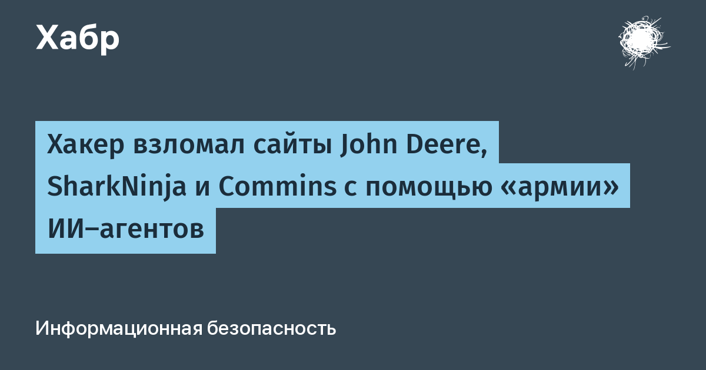

Китайскоязычный злоумышленник поручил серию атак на сайты компаний «армии» ИИ-агентов: те часами самостоятельно искали уязвимости и проводили вторжения почти без участия человека. О кампании сообщило агентство Reuters со ссылкой на Снорре Фагерланда, исследователя угроз компании NorForge. По его оценке, агенты попытались взломать более 1,2 тыс. сайтов интернет-магазинов в США, Канаде, Австралии и Японии, а успешно скомпрометированы более сотни ресурсов — в их числе сайты Deere & Company, SharkNinja и Cummins.
Фагерланд наткнулся на кампанию, сканируя интернет в поисках случайно открытых панелей управления среды Cairn — инструмента, через который оператор направляет ИИ-агентов. С 2 октября он выявил около двадцати случаев использования Cairn во вредоносных целях и наблюдал за атакующими в реальном времени. Именно открытые панели дали необычно подробную картину того, как выбираются цели, ставятся задачи агентам и закрепляется доступ в скомпрометированных системах.
Инструкции для агентов умещались менее чем в сто иероглифов. В среднем одна успешная атака занимала около 23 часа — столько агенты «перебирали и проверяли» уязвимости. Кампания с участием модели DeepSeek и Claude Code от Anthropic обошлась злоумышленнику примерно в пять тысяч долларов токенов, то есть около 50 долларов за каждый удачный взлом. В одном из эпизодов, не найдя уязвимостей в публичном приложении крупной компании, агенты сами исследовали связанную инфраструктуру, обнаружили открытую панель управления, нашли скрытый дефект в обработке данных и обманом заставили сервер выполнить вредоносные команды.
Deere & Company заявила, что устранила последствия инцидента и что конфиденциальные данные не пострадали. SharkNinja сообщила, что атака затронула лишь сайт технической поддержки, а угроза локализована; Cummins расследует сообщения об атаке на сайт стороннего поставщика. По наблюдениям Фагерланда, это не единичный случай: другой оператор ИИ-агентов украл большой массив данных банковских карт, а третий пытался с их помощью ограбить криптовалютную биржу.
Reuters не удалось установить, сколько именно информации злоумышленники вынесли на самом деле. Но сам факт зафиксирован: это первое детальное публичное свидетельство того, что коммерчески доступные ИИ-агенты способны провести сложное вторжение от разведки до закрепления без человека в контуре — и резко усиливают возможности одного атакующего. Для обороняющейся стороны тревожен и сам вектор обнаружения: кампании под себя выдают не только жертвы, но и оставленные операторами открытые панели управления агентами.